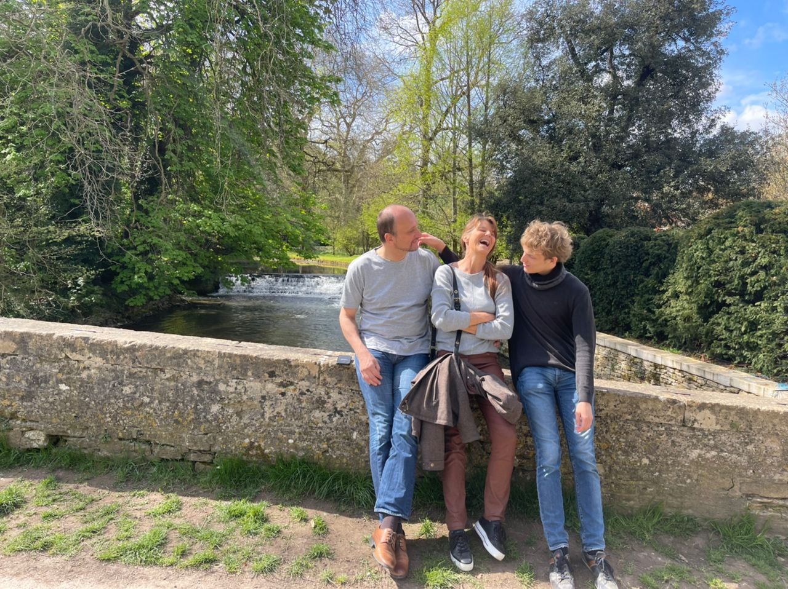
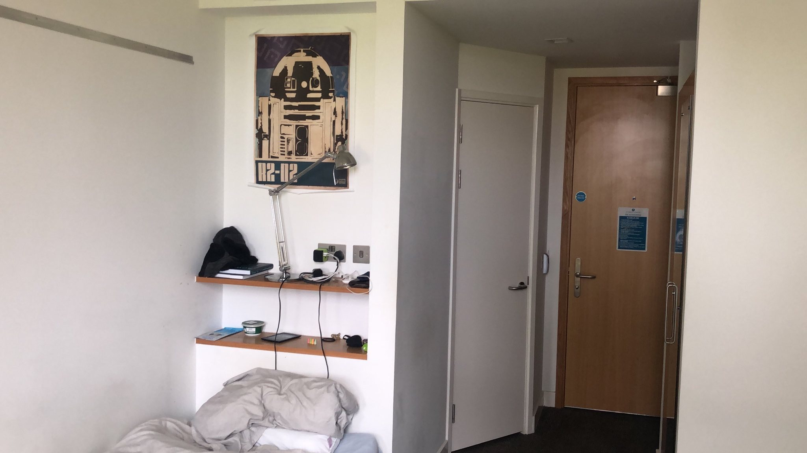
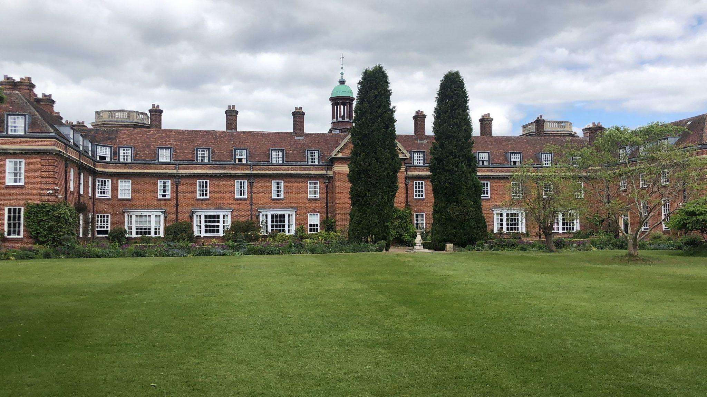
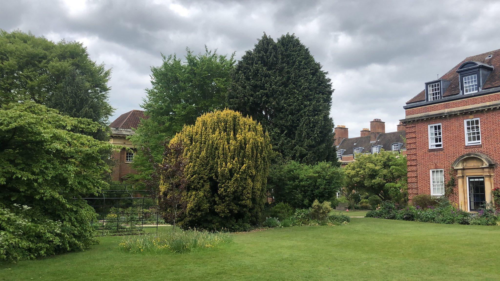
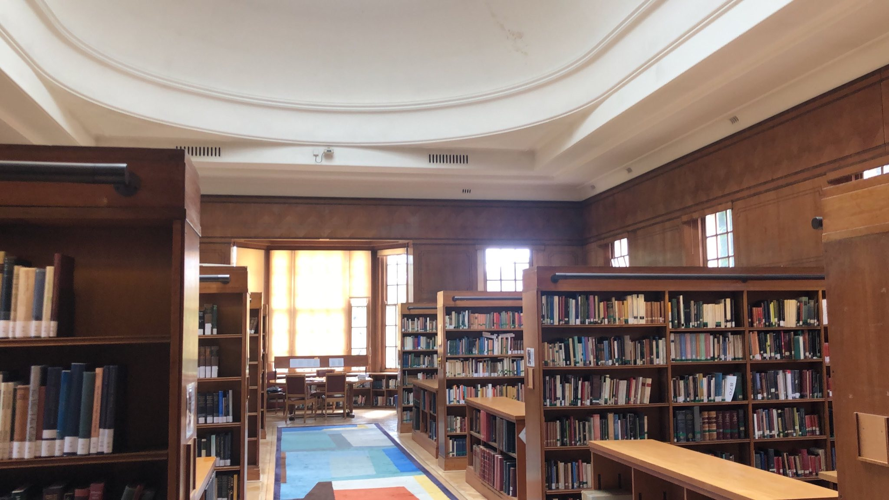
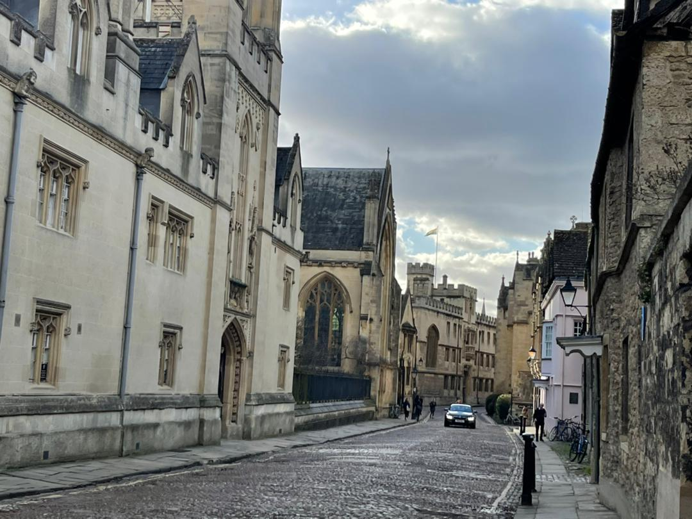
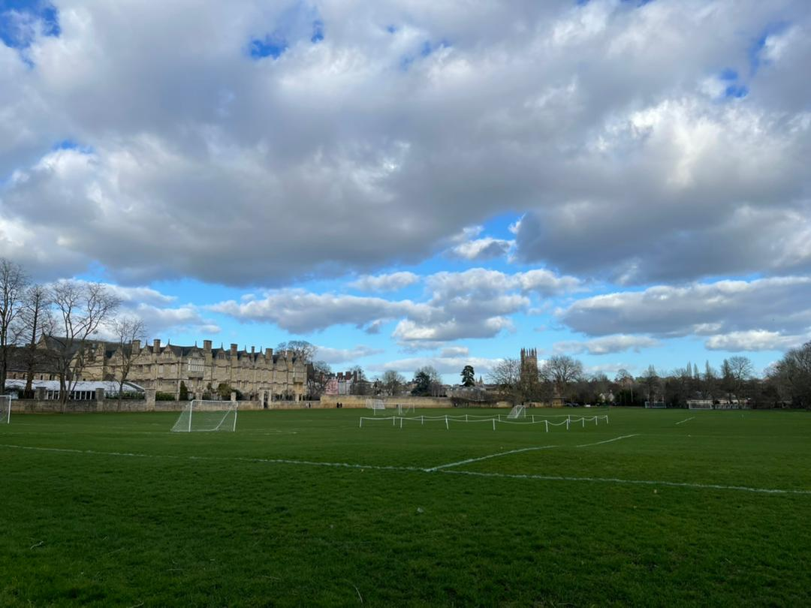

Hallo Opa, Hallo Oma!
wie versprochen ist hier ein kurzer Gruß aus Oxford! Mir geht es gut, und Alles verläuft dem Plan gemäß. Hoffe, das die Situation bei euch in Passau genauso ist :) Ich habe hier ein paar Fotos mit kurzer Erklärung vorbereitet, sodass Ihr hoffentlich einen kleinen Eindruck von Oxford gewinnen könnt.
Das auf diesem Bild bin ich, in "sub-fusc", die klassische formelle Kleidung in Oxford. Allerdings wird die normalerweise nur für Prüfungen und Zeremonien getragen.
wie versprochen ist hier ein kurzer Gruß aus Oxford! Mir geht es gut, und Alles verläuft dem Plan gemäß. Hoffe, das die Situation bei euch in Passau genauso ist :) Ich habe hier ein paar Fotos mit kurzer Erklärung vorbereitet, sodass Ihr hoffentlich einen kleinen Eindruck von Oxford gewinnen könnt.
Das auf diesem Bild bin ich, in "sub-fusc", die klassische formelle Kleidung in Oxford. Allerdings wird die normalerweise nur für Prüfungen und Zeremonien getragen.

Wie Ihr vielleicht wisst, waren an Ostern meine Eltern zu Besuch.
Allerdings weiß ich leider nicht mehr, wo wir dieses Bild gemacht haben...
Mit meinen Eltern waren wir auch Punten, eine Tradition aus Oxford, bei der ein Boot auf einem der Kanäle gestochert.
Ehrlich gesagt habe ich keine Ahnung, woher das kommt, aber es ist gar nicht so einfach (fragt mal Peter...).
Das hier ist das Gebäude in dem ich wohne.
Es gehört zum St Hugh's College, einem von vielen Colleges in Oxford.
Colleges sind ein wichtiger Teil der Universität, und jeder Student ist Teil eines Collegs.
An den Colleges finden Vorlesungen statt (hauptsächlich für Bachelor-Studenten), und es gibt für gewöhnlich Studentenzimmer und eine Kantine.

Hier ein Bild von meinem Zimmer.

Und hier das Hauptgebäude von St Hugh's.
Unser College ist besonders bekannt für die großen und aufwändig gepflegten Gärten, dafür allerdings etwas vom Stadtzentrum entfernt.

Teil des Gartens neben dem Hauptgebäude.

Die Bibliothek des Colleges (ja, jedes College hat eine eigene Bibliothek) ist auch ziemlich schön.
Das wohl berühmteste Gebäude in Oxford, die Radcliffe Camera - heute ist das ebenfalls eine Bibliothek.
Insgesamt gibt es in Oxford mehr als 100 Bibliotheken, von denen die meisten zur sogenannten "Bodleian Library" zusammengefasst sind.
Das Bild habe ich nicht selbst gemacht, sondern online gefunden (https://wallhere.com/en/wallpaper/750849).
Das Bild habe ich nicht selbst gemacht, sondern online gefunden (https://wallhere.com/en/wallpaper/750849).

Einfach ein Bild einer schönen Straße in Oxford...

Und hier ein Bild vom Gelände von Christ Church, einem anderen, ziemlich bekannten College.
Das College selbst ist das Gebäude im Hintergrund.

Zuletzt hier ein Bild vom Mathematical Institute, als die Mathematik-Fakultät.
Hier habe ich den Großteil meiner Vorlesungen.
Der Boden vor dem Eingang ist übrigens besonders, da er eine nicht-periodische Pakettierung mit Steinfliesen verwendet.
Diese hier wurde von Roger Penrose entworfen, einem großen Mathematiker und theoretischen Physiker (und ex-Kollege von Stephen Hawking).
Dieses Bild habe ich ebenfalls online gefunden.
Viele Grüße, Simon
Viele Grüße, Simon